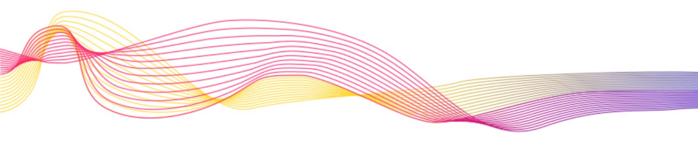
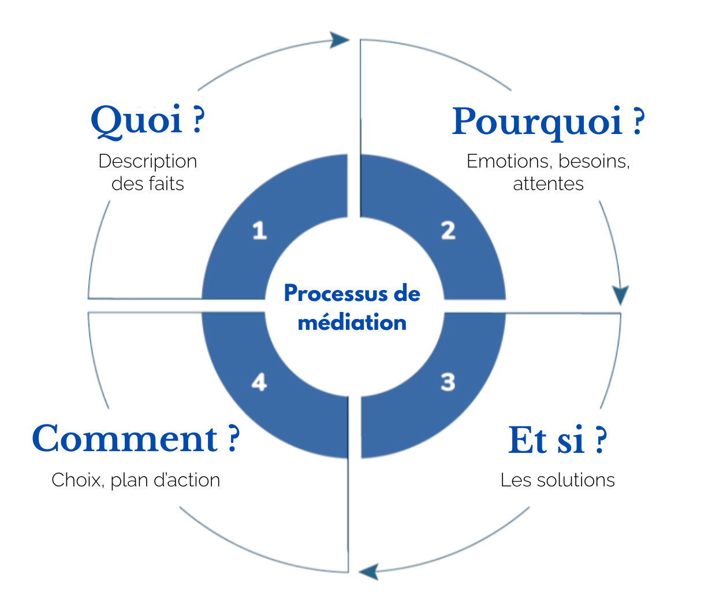

Syntone vient du grec sýntonon : « qui vibre à la même fréquence ». Être syntone, c'est être en accord, ajusté, à l'écoute fine de ce qui se joue entre les personnes. Cette posture fonde notre pratique de la médiation.
Le réseau Syntone Médiation accompagne les personnes et les organisations publiques et privées dans la résolution amiable de leurs conflits. Il est fondé par trois médiatrices diplômées et expérimentées, toutes avocates, qui pratiquent la médiation principalement en co-médiation et dont l'approche repose sur :
Nous utilisons une méthode rigoureuse (basée notamment sur la roue de Fiutak) pour traverser les émotions, clarifier les besoins et aboutir à des solutions concrètes et durables, dans un cadre juridiquement sécurisé.
Les personnes en conflit restent pleinement actrices des solutions qu'elles construisent ensemble. Notre rôle est de faciliter ce processus pour aboutir à des accords concrets et durables.
La médiation offre une alternative rapide et à coût maîtrisé par rapport aux procédures judiciaires, avec des tarifs clairs et transparents dès le départ.
La médiation est un processus volontaire et structuré qui permet aux personnes en conflit de redevenir actrices de la résolution de leur litige, sans passer par l'affrontement judiciaire.
Elle est facilitée par un médiateur professionnel, tiers neutre, impartial et indépendant. Notre rôle n'est pas de trancher, mais de favoriser l'écoute et la compréhension pour construire une solution sur-mesure.

Nous intervenons pour les particuliers et les professionnels afin de rétablir la communication et construire des accords durables.
Dans de nombreux cas, une seule réunion suffit. Pour les situations spécifiques, nous proposons un devis personnalisé.
Devis personnalisé selon la nature et la complexité de la situation.
Notre équipe vous accompagne à Voiron et sa région.
📍 58, cours Becquart Castelbon
38500 VOIRON
Vos médiatrices
Vous pouvez nous écrire directement par email — nous vous répondrons dans les meilleurs délais.
contact@syntone-mediation.frVous pouvez également nous joindre directement par téléphone auprès de l'une de nos médiatrices, dont les coordonnées figurent ci-contre.